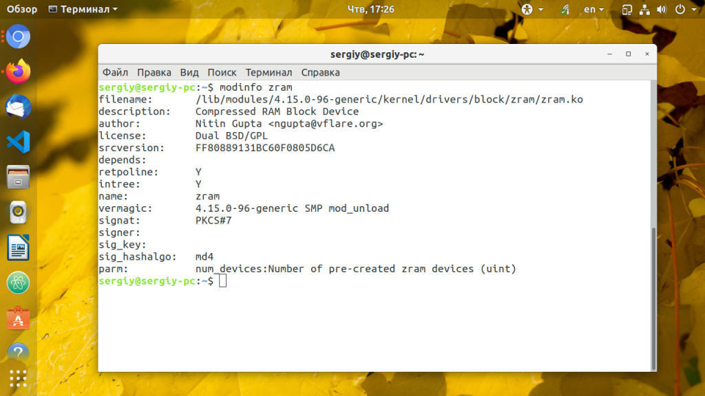
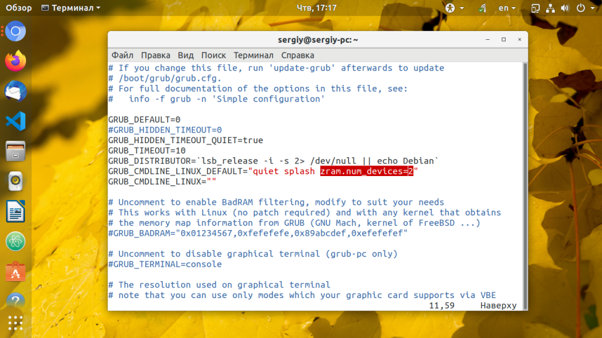
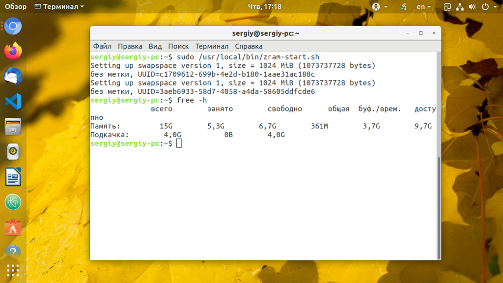
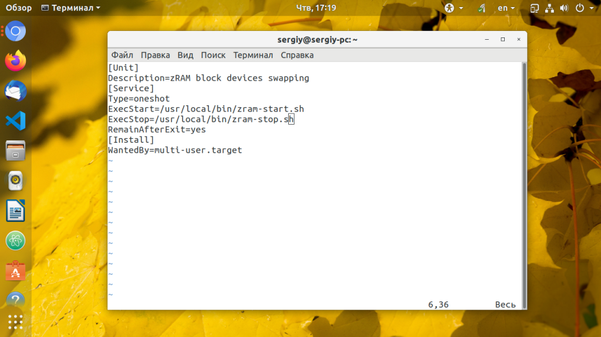
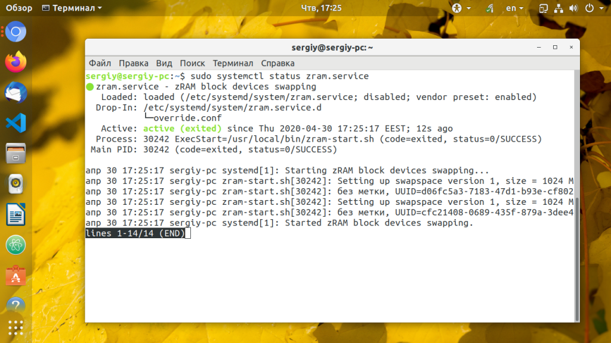

Настройка zRam в Linux
Инструкции Обновлено: 30 апреля, 2020 9 admin
Технология zRam ранее известная как compcache - реализована в виде модуля ядра Linux и позволяет сжимать содержимое оперативной памяти, и таким образом увеличивать ее объем в несколько раз. Работает это так: модуль zRam создает сжатое блочное устройство в ОЗУ которое чаще всего используется как swap или монтируется в tmp.
При этом степень сжатия данных получается в среднем 3:1. Это означает что на 1 гигабайт подкачки будет использовано в 333 мегабайт физической памяти. Сейчас оперативная память стоит не так уж дорого, но использование zRam вместо файла подкачки на диске может быть полезным для старых ноутбуков и компьютеров, а также для виртуализации. В этой статье мы рассмотрим как выполняется настройка zRam Linux на примере Ubuntu.
Это модуль ядра, а следовательно, важно, чтобы ваше ядро его поддерживало. zRam включен в стандартную поставку начиная с ядра версии 3.14. Вы можете посмотреть вашу версию ядра командой:
uname -r
Проверка информации о модуле ядра:
modinfo zram

Если у вас более старое ядро, вам придется забыть про эту технологию или пересобрать его с этой настройкой. Модуль включается здесь:
Device Drivers --->
[*] Block devices --->
<M> Compressed RAM block device support
Когда модуль загружен надо установить параметр ядра zram.num_devices который указывает максимальное количество сжатых устройств. Например для двух блочных устройств используйте добавьте в переменную GRUB_CMDLINE_LINUX_DEFAULT следующий параметр:
sudo vi /etc/default/grub
GRUB_CMDLINE_LINUX_DEFAULT=".... zram.num_devices=2"

Затем обновите конфигурацию Grub и перезагрузите компьютер:
sudo update-grub
Шаг 3. Скрипт запуска и остановки
Чтобы автоматизировать запуск zram желательно написать скрипт, который будет выполнять все необходимые действия. Давайте создадим скрипт, который запускает четыре zRam устройства и подключает их в качестве swap:
sudo vi /usr/local/bin/zram-start.sh
#!/bin/bash
modprobe zram num_devices=2
echo '1024M' > /sys/block/zram0/disksize
echo '1024M' > /sys/block/zram1/disksize
mkswap /dev/zram0
swapon /dev/zram0 -p 10
mkswap /dev/zram1
swapon /dev/zram1 -p 10
Рассмотрим подробнее что означают строчки скрипта. Первая строчка с modprobe активирует модуля ядра на два блочных устройства. Следующие две строчки устанавливают размер для этих устройств в 1 Гб. Размер устанавливается в мегабайтах. Затем, для каждого блочного устройства создаем файловую систему подкачки командой mkswap и активируем его с помощью команды swapon. Теперь создадим скрипт, который выгружает всё это и отключает zram:
sudo vi /usr/local/bin/zram-stop.sh
#!/bin/bash
swapoff /dev/zram0
swapoff /dev/zram1
echo 1 > /sys/block/zram0/reset
echo 1 > /sys/block/zram1/reset
sleep .5
modprobe -r zram
Обоим скриптам надо дать права на выполнение:
sudo chmod ugo+x /usr/local/bin/zram-start.sh
sudo chmod ugo+x /usr/local/bin/zram-stop.sh
Теперь надо всё протестировать. Запустите zRam выполнив скрипт запуска:
sudo /usr/local/bin/zram-start.sh
Теперь вы можете убедится, что количество подкачки увеличилось на 2 Гб:
free -h

Всё работает, теперь можно проверить работает ли скрипт отключения:
sudo /usr/local/bin/zram-stop.sh
Шаг 5. Настройка сервиса systemd
Чтобы запускать zram по умолчанию нужно создать для него юнит файл systemd. Создайте файл со следующим содержимым:
sudo systemctl edit --full --force zram.service
[Unit]
Description=zRAM block devices swapping
[Service]
Type=oneshot
ExecStart=/usr/local/bin/zram-start.sh
ExecStop=/usr/local/bin/zram-stop.sh
RemainAfterExit=yes
[Install]
WantedBy=multi-user.target

После этого выполните команду daemon-reload, чтобы перечитать конфигурацию systemd:
sudo systemctl daemon-reload
Запустите сервис systemd и добавьте его в автозагрузку:
sudo systemctl start zram
sudo systemctl enable zram

В этой небольшой статье мы рассмотрели как включить zram ubuntu. Как видите, в современных версиях дистрибутива, где модуль уже включён в ядро в этом нет ничего сложного. А пользуетесь ли вы какими-либо технологиями сжатия памяти? Напишите в комментариях!
Похожие записи: